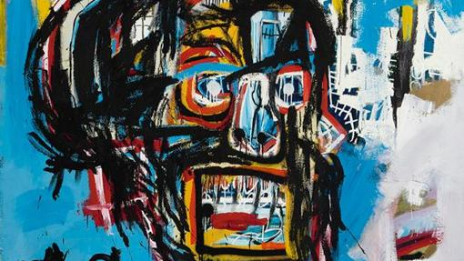
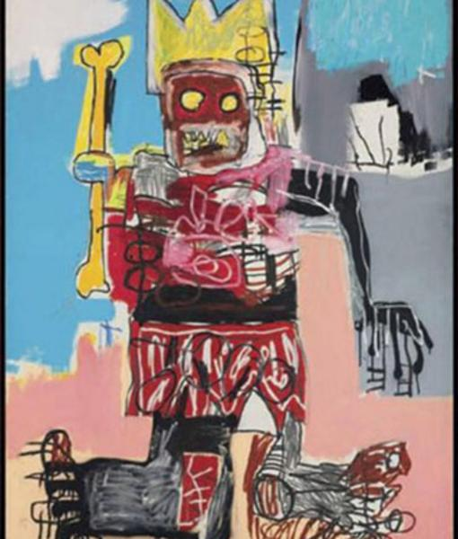
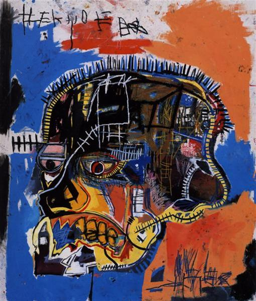
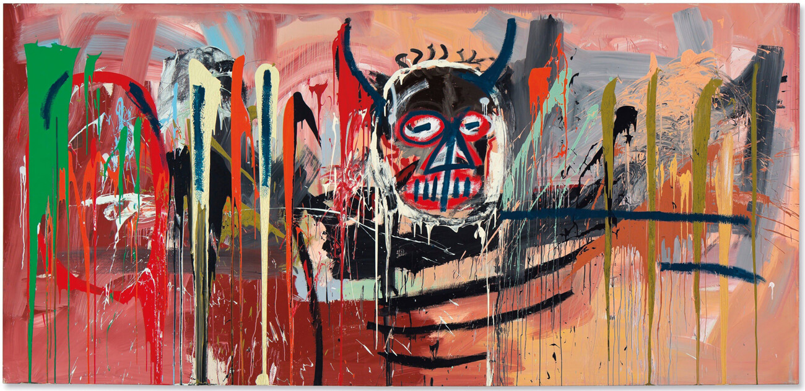
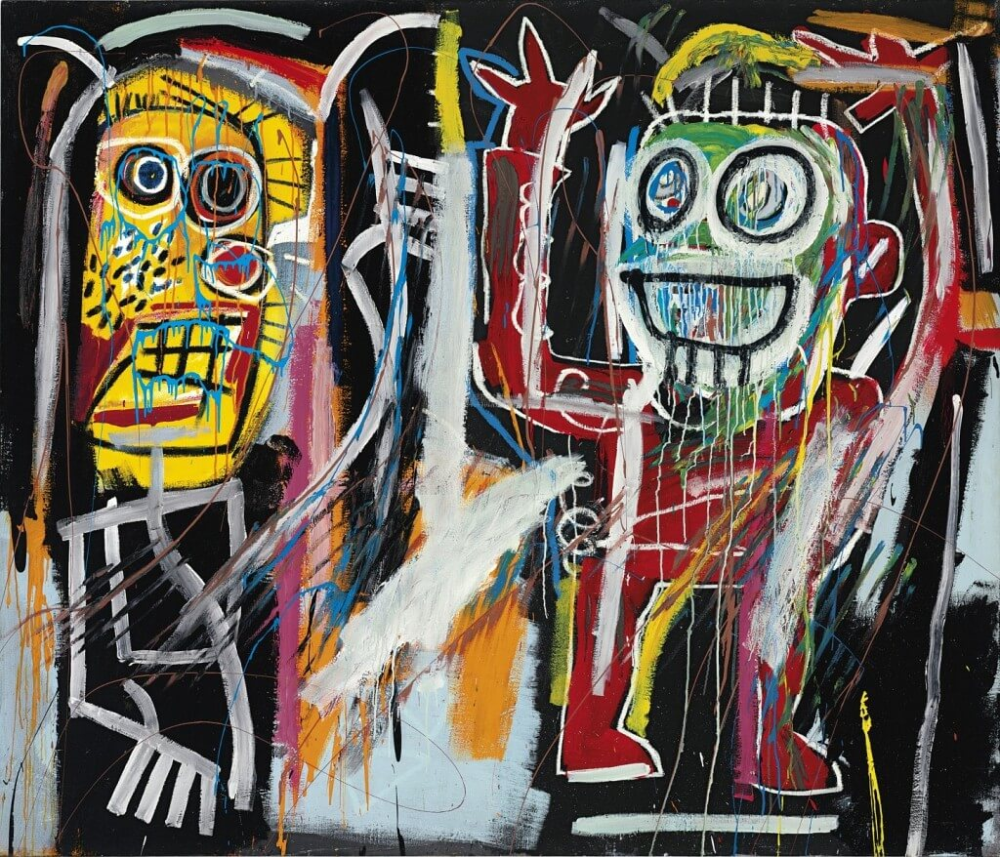

Aqui en esta pagina veremos sobre el pintor Jean-Michel Basquiat (1960 – 1988)

Biografia de la vida.
Nueva York, finales de los años 70. El barrio del Soho aparece
pintado a menudo con mensajes firmados por SAMO
(«SAMO salva idiotas», «SAMO fue el resultado de la sobreexposición»…).
Un artista de origen Haitiano-portorriqueño vende
postales y camisetas diseñadas por él mismo.
Se trata de Jean-Michel Basquiat, un joven que
ya cuida su fama de artista maldito viviendo en
las calles, drogándose y pintando
De pronto, comienza a usar lienzos como soporte y mata a su alter
ego SAMO («SAMO is dead»). Influenciado sobre
todo por el expresionismo abstracto, y Cy Twombly,
además del arte primitivo y según él su mayor influencia:
el libro de Anatomía de Grey, Basquiat es catalogado
como neo-expresionista y (artista afroamericano).
Pero pronto esas etiquetas se quedan cortas para definirlo.
En 1980 Basquiat empieza a ser muy reconocido en el
mundillo artístico neoyorquino.
Deja de ser afroamericano para ser americano.
Warhol se hace su amigo y protector, y comienza a
vender muchos cuadros a muy buen precio.
De hecho, su éxito en los siguientes años fue algo
rutilante («The Radian Child», «El niño radiante»,
empezó a llamarle la crítica).
Pero como afirmaron muchos: «Su fama superó a su arte».
Basquiat acabaría muriendo de sobredosis con –como no– 27 años.
Pero el artista siempre afirmó que era inmortal.
La leyenda continuó tras su muerte. Hoy se considera un
genio, el último gran artista norteamericano cuyo trabajo
se llega a cotizar hoy hasta 15 millones de dólares por cuadro.
Pinturas que mas me gustan.
Untitled.

Yellow Bone King.

Scull.

Untitled.

Dustheads.
